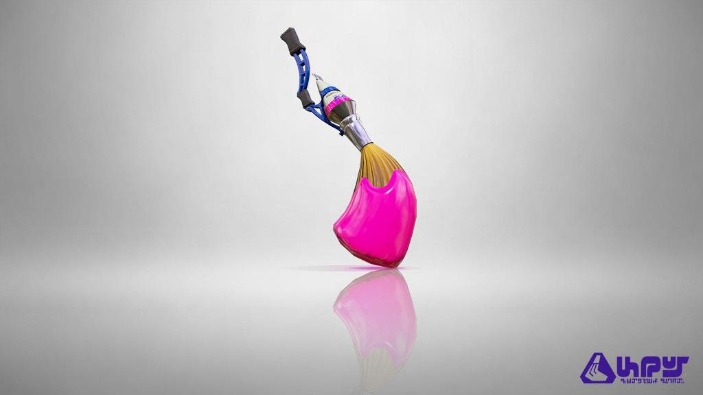

잉클링
잉클링은 전신이 잉크로 이뤄진 해양생물로, 인류가 멸망한 뒤 오징어로부터 진화하여
물 밖에서 살고 있다는 세계관을 가지고 있습니다. 잉클링들은 향락적인 문화를 가지고 있으며,
삶은 순식간에 끝나버리는 축제이니 다른 걱정말고 즐기는게 좋다는 마인드를 가지고 있습니다.
덕분에 잉클링들이 사는 곳에는 매일
축제와 영역배틀이 벌어지고 있으며 가게에서 땀흘려 일하는 사람들은 새우, 해파리 등 다른
종족입니다. 잉클링들이 영역배틀을 할 때는 자신의 잉크를 물총에 넣어
사용하는데, 이때 사용한 잉크는 시간이 지나면 공기 중에 분해되어 사라지는 친환경 물질이라 청소할 필요는 없다고 합니다.
이들의 주 무기가 잉크이기 때문에 이들은 양동이, 붓, 롤러, 볼펜 등을 무기로 사용하기도 합니다.
한때 문어족인 옥토링과 대 전쟁을 벌였던 적도 있으나 현재 잉클링은 옥토링을 구분할줄도 모릅니다.
좀 스타일이 독특하네 라고 생각할 뿐입니다.
***사진 위에서 커서를 멈춰보세요***
